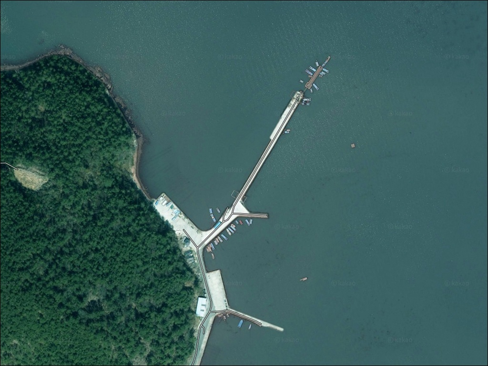
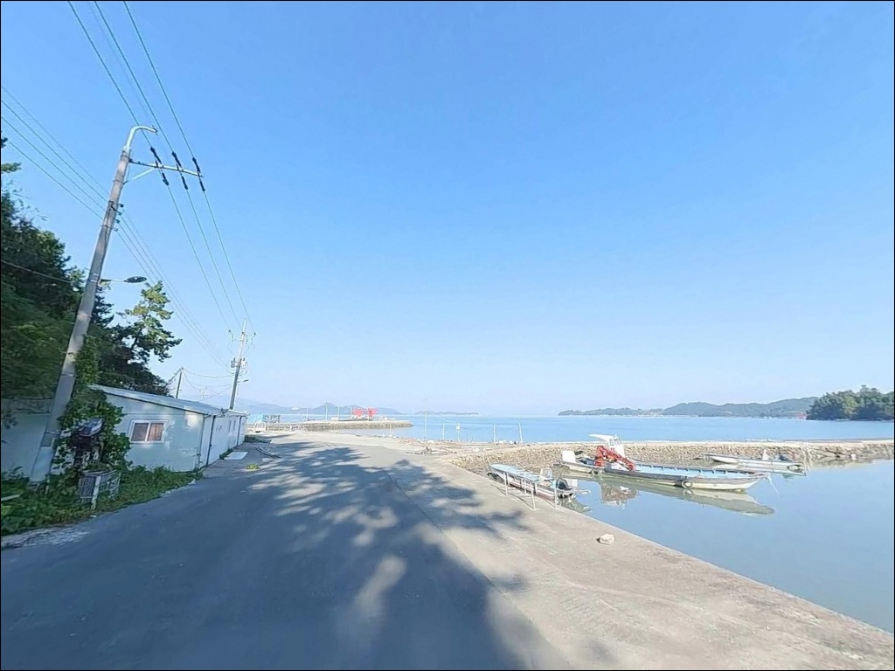
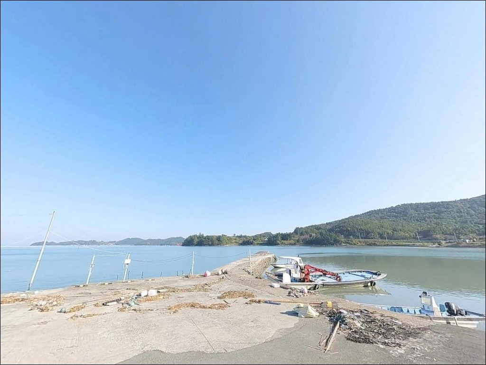
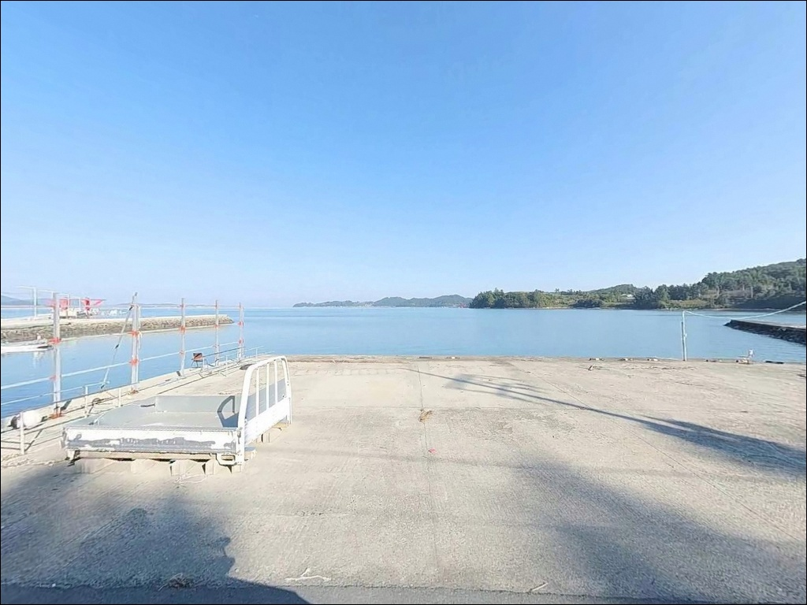
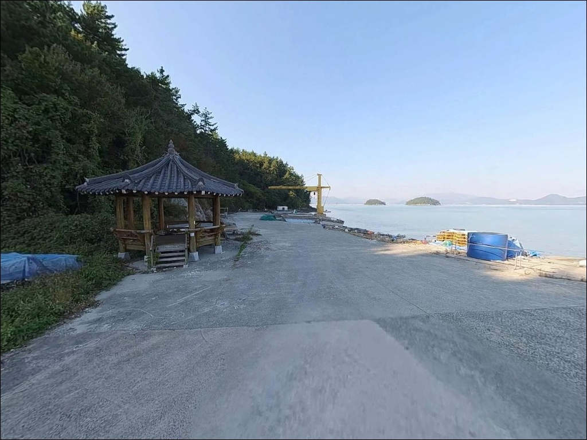
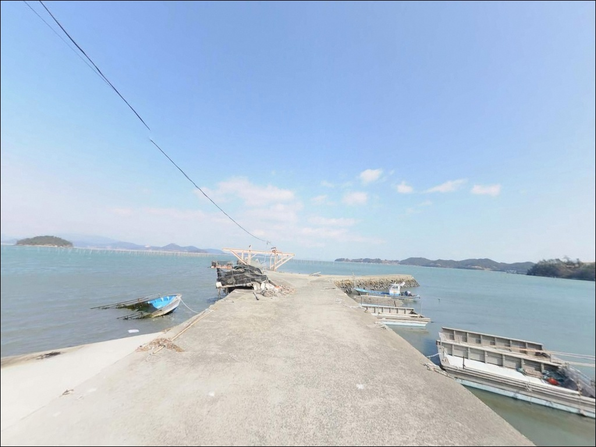
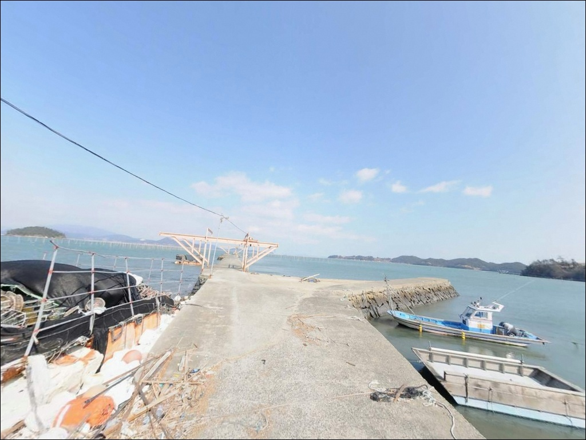
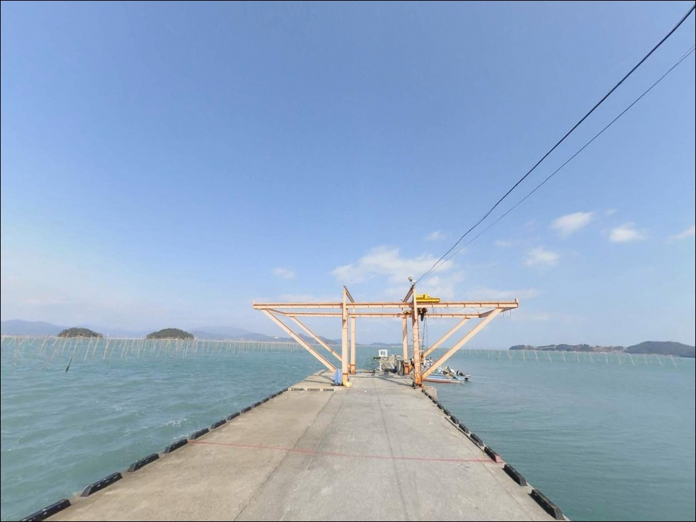
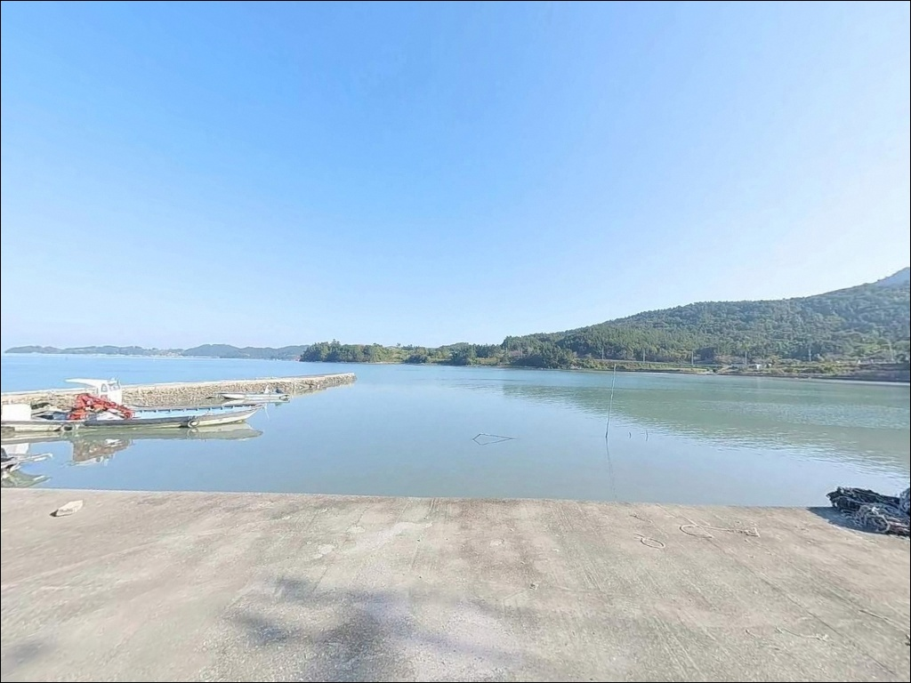

죽선리방파제, 조약도 전남 완도군 방파제 낚시와 차박 캠핑의 완벽한 조합
이 페이지에는 광고(제휴 링크 포함)가 있으며, 광고 링크를 통해 구매하면 운영자가 판매 수익 또는 수수료를 받을 수 있습니다. 포인트 사진: 카카오맵 스카이뷰·로드뷰. 이 페이지의 지도·사진 이미지는 카카오맵의 실제 서비스 이미지와 다를 수 있습니다.


포인트 안내
죽선리방파제
전남 완도군 약산면 장용리 325-9
방파제 끝단에 자리를 잡았는데도
조류가 너무 강해 채비가 쓸려버린다면,
그건 자리 선택의 문제가 아닌
타이밍 판단의 문제입니다.
죽선리방파제는 사량도와 약산면 사이를 지나는
물길 영향으로 조류 흐름이 강하게 형성되는 구조로,
진입 전 조류 방향과 세기 파악이 먼저입니다.
전남 완도군 약산면 장용리,
약산도(조약도) 동편 해안에 자리한 죽선리방파제는
ㄱ자형 소형 방파제로 외항 전면에 테트라포트가 거치된 구조입니다.
방파제 끝단으로 갈수록 수심이 점진적으로 깊어지며,
원투낚시·릴찌낚시·루어낚시 복수 방식을
선택할 수 있는 포인트입니다.
이 글은 죽선리방파제의
진입 동선, 차박 체류 여건, 낚시 지형 분석,
스타일별 공략 조건에 집중합니다.
조황 단정과 특정 어종 보장은
이 글의 범위에 포함되지 않습니다.

1. 죽선마을 진입 동선과 차량 접근 조건
약산도는 고금대교와 약산대교를 통해
육지에서 차량으로 진입할 수 있습니다.
강진 방면에서 고금대교를 건너
고금도를 통과한 뒤 약산대교를 넘어
약산도 내부 일주로를 타면 장용리 방향으로 이어집니다.
죽선마을 내부 길로 진입하면 방파제까지 닿습니다.
도로 폭은 차량 1대가 통과하기에 충분한 수준이나,
마을 구간에서는 서행이 필수입니다.
방파제 입구와 내항 선착장 인근에서
차량 회차가 가능합니다.
주차는 방파제 진입로 시작점 인근 공터에
1~2대 수용이 가능하고,
내항 선착장 주변 콘크리트 바닥에
3~5대 정도 추가 확보가 됩니다.
어선 이동 동선을 막지 않는 자리를
우선으로 잡아야 합니다.

2. 차박 환경과 야간 체류 조건
방파제 초입 공터에 차량을 세우고
하룻밤 머무는 차박 배치는 조건부로 가능합니다.
죽선마을은 소규모 어촌 형태로
야간 차량 통행이 적어 프라이버시는 양호한 편입니다.
다만 민가와 가까운 위치이므로
야간 고성방가와 대형 조명 사용은 자제해야 합니다.
방파제를 따라 가로등이 일부 배치되어 있으나
조도가 낮아 개인 랜턴 준비가 필수입니다.
외항 쪽은 동풍과 남동풍의 영향을 직접 받는 구조로,
기상 악화 시 바람이 강하게 체감되는 편입니다.
출조 전날 해상 예보를 꼭 확인하는 습관이 필요합니다.
차박을 메인 목적으로 삼기보다는
낚시를 마치고 간단히 머무는 형태가
이 포인트 환경에 맞는 방식입니다.
편의시설이 없어 완전 자급 체제로 진입해야 하며,
식수와 비상약품, 여분 의류까지
출발 전에 갖추는 것이 기본입니다.


3. 주변 편의시설 및 인프라 현황
죽선리 방파제 반경 1km 이내에는
편의점이나 식당을 기대하기 어렵습니다.
약산면 소재지 방향으로 3km 내외로 이동하면
약산면사무소 인근에 하나로마트, 식당, 주유소, 보건지소가
위치해 기본 생활 인프라를 이용할 수 있습니다.
낚시 소품이나 채비 등 전문 용품이 필요하다면
고금도 방향 또는 강진 시내로 나가야 합니다.
출발 전에 낚시 소품, 식수, 얼음, 연료까지
모두 준비하고 진입하는 것이 현실적인 방법입니다.
현장에서 재보급을 기대하기 어려운 포인트입니다.
응급 상황 발생 시에는 약산면사무소 인근 보건지소를
가장 가까운 의료시설로 활용할 수 있습니다.
고금대교를 건너 강진 방면으로 이동해야
종합의료 서비스를 이용할 수 있으므로,
비상약품 준비는 철저히 갖추는 편이 좋습니다.

4. 낚시 효율을 결정하는 방문 전 준비사항
죽선리방파제 방문에서 가장 먼저 확인할 항목은
물때와 조류입니다.
사량도와 약산면 사이를 지나는 물길 영향으로
이 일대 조류는 시간대에 따라 상당히 강해집니다.
바다타임에서 약산면 기준 물때를 확인하고
조류가 완만해지는 정조 전후를 집중 공략하는 전략이
이 포인트에서 채비 손실을 줄이는 방법입니다.
외항 테트라포트 구간은 이끼와 물기로
미끄러운 상태일 수 있습니다.
논슬립 기능이 있는 갯바위 신발과 구명조끼는
이 포인트에서는 선택이 아닌 기본 장비입니다.
방파제 끝단은 야간에 조명이 닿지 않으므로
헤드랜턴을 반드시 챙겨야 합니다.
마을 선착장 기능을 겸하는 공간이므로
어선 이동 동선과 어구 주변은 피해서 자리를 잡아야 합니다.
쓰레기는 전량 수거해 귀가 시 처리하는 것이
이 포인트를 오래 유지하는 기본 매너입니다.
출조 전에 약산도 일대 최신 조황도
꼭 검색해 보시기 바랍니다.

5. ㄱ자 방파제 지형이 만드는 낚시 여건 분석
죽선리방파제는 ㄱ자형으로 꺾이는 구조를 갖추고 있습니다.
방파제 외항 전면에 테트라포트가 거치되어 있으며,
내항은 선박이 접안하는 선착장 형태입니다.
바닥은 내항 쪽으로 사철과 뻘이 섞인 구성이고,
방파제 끝단으로 갈수록 수심이 점진적으로 깊어집니다.
수심은 내항 쪽 2~4m 수준이며
방파제 끝단 외항 쪽으로 5~7m 안팎이 나오는
전형적인 소규모 마을 방파제 패턴입니다.
창조·낙조가 전환되는 시간대에
조류가 방파제 끝단을 지나는 구간에서
어종 활성이 올라오는 편입니다.
외항 석축과 테트라포트 경계 구간은
바닥층 어종이 머무는 지형 조건을 갖추고 있습니다.
양식 시설과 방파제 경계가 맞닿는 구간도
탐색해볼 만한 자리입니다.
다만 조류가 너무 강할 때는
봉돌 무게를 높이거나 정조 타이밍을 기다리는 편이
채비를 아끼는 방법입니다.


6. 포인트 지형에 어울리는 낚시 스타일 제안
이 포인트에서 가장 잘 맞는 방식은
릴찌낚시(전유동)입니다.
방파제 끝단 외항 쪽 3~6m 수심대를
흘리는 방식이 이 해역의 기본 공략 흐름으로,
조류가 방파제 끝을 지나는 구간을 집중적으로
탐색하는 방식이 이 지형에 맞습니다.
감성돔과 볼락이 이 방식으로 기대해볼 수 있는 어종입니다.
원투낚시도 이 포인트 구조에 잘 어울립니다.
방파제 외항 방향으로 장타를 운용하면
조류를 타고 움직이는 어종을 기다릴 수 있습니다.
수로 방향으로 투척해 바닥을 노리는 방식이 기본이며,
노래미와 붕장어를 기대해볼 수 있는 자리입니다.
루어낚시와 에깅도 시도해볼 수 있습니다.
외항 석축 경계면과 테트라포트 사이 구간에서
바닥층을 노리는 방식이 유효한 편입니다.
이 일대 해역은 갑오징어와 돌문어 워킹 포인트로
활용되는 패턴이 있어,
방파제 주변 석축 구간을 천천히 탐색하는
방식이 이 지형 조건에 맞습니다.
해질녘과 이른 새벽 타이밍을 집중 공략하는 편이 효율적입니다.

7. 조건이 맞지 않을 때 이동할 대안 포인트
죽선리방파제 조류가 너무 강하거나
주차 공간이 여의치 않을 때
첫 번째로 이동할 대안은
득암항입니다.
남서쪽으로 약 4km 거리에 위치한 득암항은
죽선리방파제보다 규모가 크고
주차 여건도 쾌적한 편입니다.
낚시 포인트로서의 접근성도 좋아
기본 대안 동선으로 활용하기 적합합니다.
약산도 내부 화가리 방파제도
같은 약산도 해역에 위치한 대안입니다.
바다타임에 등록된 포인트로
외항 구조가 확인되어 있어
이 일대 방파제 낚시 패턴을 참고하기 좋은 곳입니다.
당목항 역시 약산면의 주요 항으로
방파제 낚시와 함께 생활 인프라도 갖춰진 대안입니다.
차박 대안을 찾는다면
남쪽으로 약 5km 거리의 가사해수욕장이
편의시설 확보 면에서 유리합니다.
약산도 일주로 상의 해안 조망 구간도
차량 1~2대 단위의 노지 가능 지점이
있는 편입니다.

조류 타이밍을 맞추면
죽선리방파제는 달라집니다
릴찌낚시와 원투낚시를 함께 운용하는 낚시인이라면
죽선리방파제의 ㄱ자 방파제 구조와
외항 테트라포트 지형은 잘 맞는 조건입니다.
조류가 강하다는 특성이 단점이 아니라
정조 타이밍을 정확히 맞출 때
집중 공략이 가능한 포인트가 됩니다.
갑오징어와 돌문어 에깅을 즐기는 낚시인에게도
테트라포트 석축 경계 구간이 탐색해볼 만한 자리입니다.
반면 편의시설이 없고 진입로가 좁아
대형 차량이나 많은 장비를 싣고 처음 찾는 분이라면
진입 전 도로 폭 확인과 자급 준비가 선행되어야 합니다.
물때 확인, 자급 준비, 안전 장비,
이 세 가지를 갖추고 간다면
약산도 동편 바다를 조용히 독점할 수 있는
포인트가 될 수 있습니다.
낚시를 마치고 포인트 옆에 차를 세우고 하룻밤 머무는
차박 낚시 여행자라면,
물때에 맞춰 들어가 조용한 어촌 마을의 밤을 즐기는
출조로 기억될 수 있는 곳입니다.